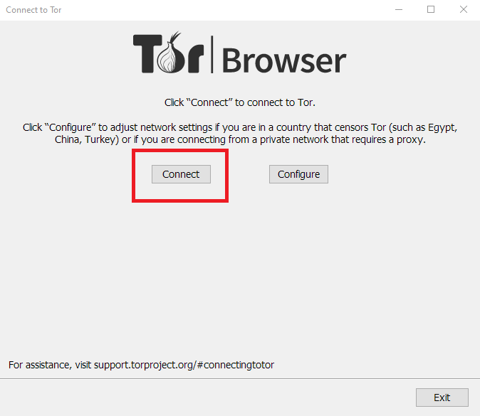
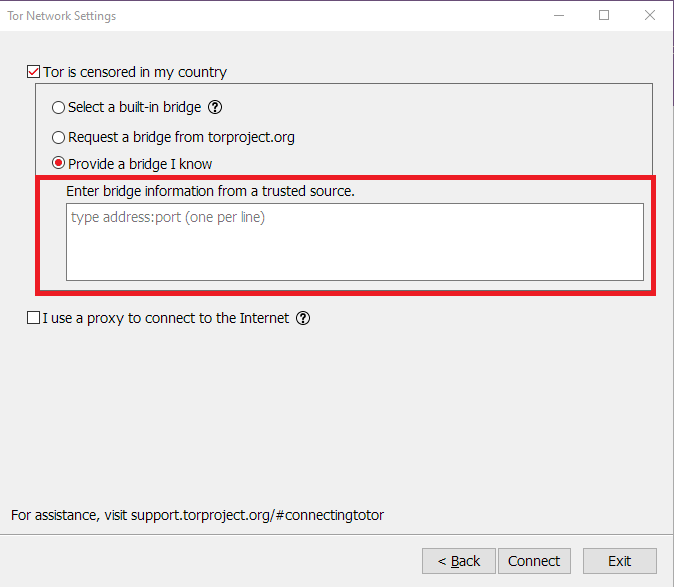

TorBrowser 快问快答：它能做什么、不能做什么、怎么用不踩坑
整理了 8 个关于 TorBrowser 的高频问题——匿名上网怎么实现的、和普通浏览器差在哪、连接失败怎么排查、移动端怎么用，以及到底值不值得装。
整理一篇关于 TorBrowser 的快问快答。有些问题是新手第一次接触 Tor 就会冒出来的，有些是用了一阵之后才会遇到的实操疑问，尽量覆盖全。
TorBrowser 到底是什么？为什么它和别的浏览器不一样？
一句话：TorBrowser 是把你的网络流量送进 Tor 洋葱网络的浏览器。普通浏览器直连目标网站，流量经过一跳就到了，网站能看到你的 IP、时区、设备信息。TorBrowser 不一样——它先把流量在三个随机的 Tor 中继之间转一圈，最后一个中继才把流量送到目标网站。三个中继谁都不知道你是谁、最终要去哪，网站也只看到最后一跳出口中继的 IP。
但这只是网络层。TorBrowser 还内置了一套反指纹机制：强制统一所有用户的窗口尺寸（Letterboxing）、User-Agent 字符串、字体列表、时区欺骗。普通浏览器让你和别人长得不一样，TorBrowser 让你和几百万 Tor 用户长得一模一样。这两部分加起来才是 TorBrowser 的核心价值——它的官网上有完整的设计说明，不是一个"带代理的 Firefox"那么简单。

谁需要它？日常上网也要用吗？
分情况。如果你只是想防广告追踪、不想被电商定价歧视，Brave 或 Firefox 加隐私扩展就够了，TorBrowser 太重。但如果你符合下面任何一条，TorBrowser 就是工具级的东西：
- 需要访问 .onion 网站——这是 Tor 网络独有的域名形式，普通浏览器根本打不开
- 在网络审查严格的环境下，普通 VPN 也被限制
- 做高风险的匿名活动（比如新闻调查、举报），需要比 VPN 更强的溯源难度
- 不想让网站通过指纹识别持续跟踪你
日常主力浏览器用 TorBrowser 不太现实。三个中继跳转意味着速度明显慢，看视频、下载大文件会很痛苦。多数人的用法是：日常用普通浏览器配 VPN，需要匿名或绕过审查时再打开 TorBrowser。
怎么安装和第一次连接？
TorBrowser 跨平台支持 Windows、macOS、Linux，移动端有 Android 版。安装包从官方下载拿，下载之后解压就能用，不需要安装过程，这是 Tor 项目的安全设计——避免安装器被植入恶意代码。
第一次打开会看到 Tor Launcher 的连接界面。最关键的选择是：你的网络环境是否对 Tor 有限制？如果在国内或其他 Tor 中继被墙的地区，直接连接大概率失败，这时要点"配置"然后选择网桥或 Snowflake 传输方式。网桥是 Tor 官方提供的一批不在公共中继列表里的中继，防火墙不容易识别；Snowflake 更激进——它把 Tor 流量伪装成 WebRTC 视频通话流量穿透封锁。

连接卡住怎么办？看日志比瞎换网桥靠谱
Tor 连接失败时不要第一反应就是卸载重装或到处换网桥。先看日志——Tor Launcher 在出错弹窗里有个"将 Tor 日志复制到剪贴板上"的按钮，点一下粘贴出来就能读。日志的完整解读和常见错误对照表在TorBrowser文档里有详细整理。
日志里最有用的是两个东西：引导进度百分比和 Warning/Error 行。卡在 10% 不动说明连不上任何中继，大概率是网络封锁；卡在 40~60% 是下载中继描述符卡住，目录服务器不可达；卡在 80% 说明 Tor 挑不出足够多的可用中继。Warning 和 Error 里的关键词更直接：certificate expired 就是你系统时间不对，Proxy server refusing connection 就是 9150 端口被占用了，DNS resolution failed 就是防火墙封了 DNS。
日志不要全贴出去——里面有你的中继指纹和本地路径，精简掉 Info 级别的行、把本地路径替换成通用路径再发。
移动端能用吗？Orbot 是什么？
Android 上有 TorBrowser for Android，但更灵活的组合是 Orbot 加 TorBrowser。Orbot 是 Tor 守护进程的 Android 版，本身不带浏览器界面，它可以让手机上任意应用的流量走 Tor 网络。
Orbot 有两种代理模式：VPN 模式把整个手机的流量都送进 Tor，彻底但耗电耗流量；应用级代理只让你选中的应用走 Tor，省电不影响日常使用，是推荐的日常模式。Telegram、Signal、Firefox、K-9 Mail 这些应用都支持 SOCKS5 代理，可以单独配 Orbot。微信、QQ 等国内 IM 通常不支持 SOCKS 代理，在 Orbot 里把它们排除就行。
反指纹具体做了什么？为什么不能装扩展？
TorBrowser 的反指纹策略是"让所有用户看起来完全一样"，而不是"让每次会话看起来不一样"。它做了几件事：地址栏下方强制一个固定尺寸的内页区域（不管你窗口怎么拖，网页看到的视口都是 1000x800 或 1200x900）；User-Agent 统一报告 Windows Firefox；字体列表只允许通用跨平台字体；时区根据目标网站位置自动欺骗；较安全和最安全级别直接禁用 Canvas/WebGL 指纹 API。
这套策略的根基是"统一"。如果你装了一个 AdBlock 或暗色模式扩展，这个扩展的特征就会泄漏给网页——而且每个人的扩展组合不同，等于直接把"统一"这个核心保护砸穿了。TorBrowser 默认只带 NoScript、HTTPS Everywhere、Tor Launcher 三个扩展，不要加第四个。
和 Mullvad Browser、Brave 这些同类比怎么样？
三者定位完全不同，选哪个取决于你要什么保护。
TorBrowser 是 Tor 网络加反指纹，速度最慢但保护最强，能访问 .onion 网站，内置网桥应对审查，完全免费。Mullvad Browser 是 Tor 项目和 Mullvad VPN 合作的产物——继承了 TorBrowser 全部反指纹设计，但不用 Tor 网络，直接连普通互联网或 VPN。反指纹能力一样，但速度快得多，适合日常上网防追踪但不需要绕过审查的用户，缺点是桌面端才有、需要配可信 VPN（月付约 €5）。Brave 走的是另一条路：反指纹用随机化策略而不是统一，内置广告拦截最快，扩展自由装，日常使用最均衡但反指纹强度比前两者弱一个档位。
很多安全从业者的组合是：Mullvad Browser 加 Mullvad VPN 当日常主力，需要最高保护或访问 .onion 时再开 TorBrowser。
安全级别应该调多高？
TorBrowser 右下角有个盾牌图标，点开能选三档安全级别：标准、较安全、最安全。标准级别允许 JavaScript 正常运行、Canvas/WebGL 可用，浏览体验最好但指纹泄漏项最多；较安全级别禁用了网站主动请求的 JavaScript、把 WebGL 输出固定值；最安全级别全面禁用 JavaScript 和 WebGL，体验最差但指纹泄漏最少。
没有"越高越好"的标准答案，取决于你访问的网站需要多少 JavaScript。一般日常浏览用标准就行；访问敏感站点或不确定安全性的内容时切到较安全；最高风险活动才用最安全。切换不需要重启 TorBrowser，即时生效。

最后一句：如果你确实有匿名或绕过审查的硬性需求，TorBrowser 是目前最靠谱的工具级选择，值得花半小时折腾好网桥配置；如果只是日常想防追踪，Brave 或 Firefox 加隐私扩展就够用，不必承受 Tor 的速度和复杂性。开源镜像做了三个节点，GitHub 主仓、Gitee 国内镜像、GitCode 上也同步了一份，随意选顺手的地址。